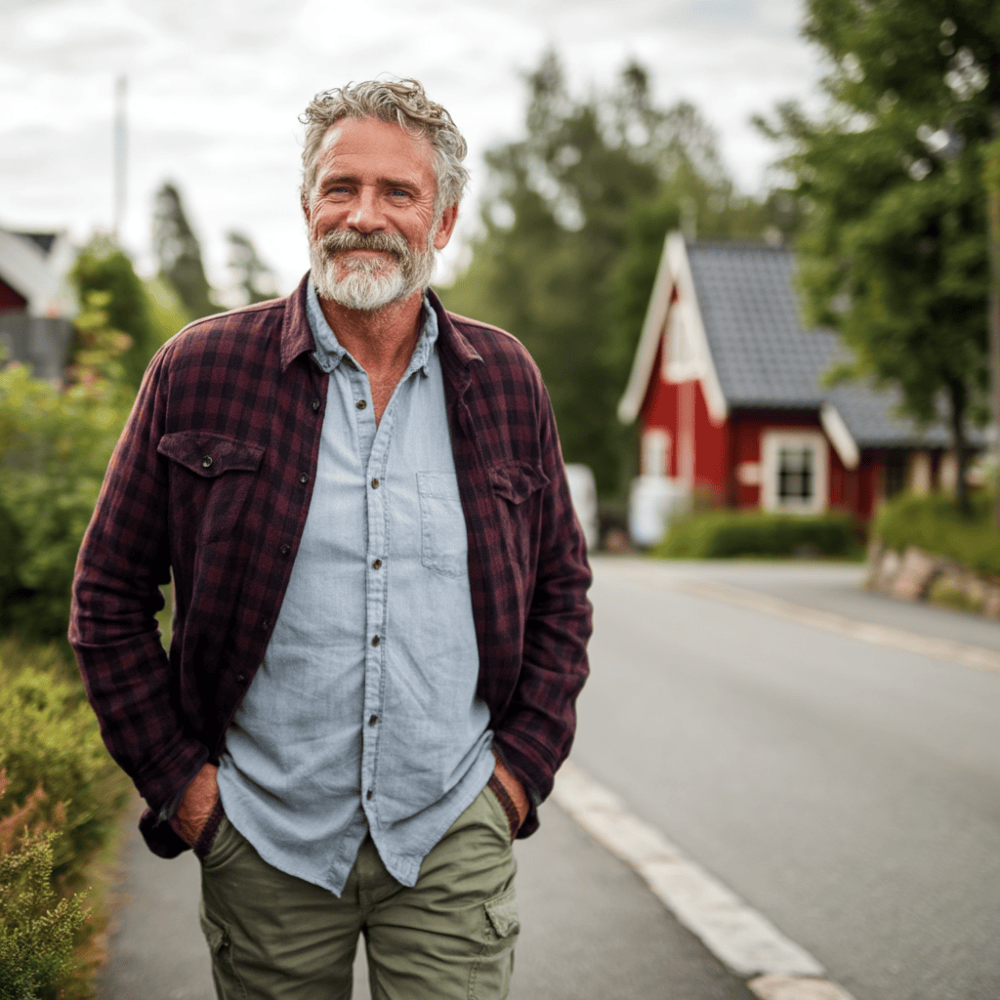

Frisktid
Folkeopplysning om ernæring, aktivitet og mental helse. Forskningsbasert kunnskap, formidlet slik at alle kan forstå og bruke den.
Idé
Kunnskap som gjør hverdagen sunnere.
Frisktid er et folkeopplysningsprosjekt om tre temaer som henger tett sammen: ernæring, aktivitet og mental helse. Alt innhold utvikles i samarbeid med fagpersoner innen hvert felt, slik at det er faglig solid og samtidig tilgjengelig for alle.
Kjernen i prosjektet er gjennomarbeidet og visuelt godt utdanningsmateriell, tilpasset hvert alderstrinn fra barnehage til og med videregående skole.
Navn og logo
Navnet viser til at enkle valg i hverdagen kan gi flere år med frisk kropp og sinn. Frisktid handler om å flytte den friske tiden lenger ut i livet.
Ordmerket bærer den samme tanken. Prikken over den andre i-en er skjøvet helt ut til slutten av navnet, slik den friske tiden skyves lenger ut i livet.
Farger
Fem faste fargepar, hvert med én bakgrunnsfarge og én typografifarge. Hver flate bruker bare ett par, uten gradienter eller skygger.
Typografi
Hele identiteten er satt i Arsenica. Alt Regular gir overskriftene et varmt og litt lekent preg, mens Text Light holder brødteksten rolig og lettlest.
Fotostil
Ekte mennesker i dagslys, i omgivelser de fleste kjenner seg igjen i: skogen, gaten, hagen og kjøkkenbordet. Betrakteren skal kunne se seg selv i bildet.

Målgruppe og tilbud
Det er aldri for tidlig å lære om helse, og aldri for sent å forbedre den. Innholdet tilpasses hver aldersgruppe, mens det visuelle uttrykket er det samme.